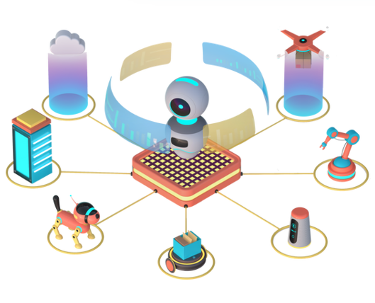

Khám phá AI, các lĩnh vực ứng dụng và trải nghiệm các công cụ AI sinh động!
Giới thiệu về AI
Các Thành Phần Chính của AI
Các Loại AI Theo Khả Năng
Phân Loại AI Theo Chức Năng
Mục Tiêu và Lợi Ích
Thách Thức và Hạn Chế
Tương Lai của AI
Công Nghệ Cốt Lõi

Thị Trường Toàn Cầu
Kỹ Thuật và Đạo Đức
Tương Lai của AI
1. Giới thiệu về Trí Tuệ Nhân Tạo
Định nghĩa:
Trí tuệ nhân tạo (
AI
) là lĩnh vực trong khoa học máy tính, tập trung vào việc tạo ra các hệ thống có khả năng
mô phỏng trí tuệ con người, bao gồm
học hỏi,
lập luận, và
tự động hóa quyết định.
Mục tiêu:
Phát triển các máy móc có khả năng
suy nghĩ,
học hỏi, và thực hiện các tác vụ tương tự con người.
Vai trò của AI:
Cải thiện năng suất lao động.
Hỗ trợ ra quyết định chính xác hơn.
Thay đổi cách con người làm việc và tương tác với công nghệ.
Ứng dụng hiện đại:ChatGPT,
trợ lý ảo (Siri, Alexa),
xe tự lái,
robot công nghiệp,
phân tích dữ liệu lớn (Big Data).
2. Các Thành Phần Chính của AI
Các thành phần cốt lõi:
Trí tuệ nhân tạo được xây dựng dựa trên các thành phần chính bao gồm
học tập (Learning),
lập luận (Reasoning),
giải quyết vấn đề, và
xử lý ngôn ngữ tự nhiên (NLP).
Học Tập (Learning): Học hỏi từ dữ liệu và kinh nghiệm thông qua các phương pháp như học có giám sát, không giám sát, và học tăng cường.
Lập Luận (Reasoning): Phân tích và rút ra kết luận từ dữ liệu.
Giải Quyết Vấn Đề: Tìm giải pháp tối ưu cho các bài toán phức tạp.
Xử Lý Ngôn Ngữ Tự Nhiên (NLP): Hiểu và giao tiếp bằng ngôn ngữ con người.
3. Các Loại AI Theo Khả Năng
Trí tuệ Nhân tạo Hẹp (ANI)
: Thực hiện một nhiệm vụ cụ thể (ví dụ: ChatGPT, Alexa).
Trí tuệ Nhân tạo Tổng Quát (AGI)
: Có khả năng học hỏi và thích ứng như con người (đang được nghiên cứu).
Trí tuệ Nhân tạo Siêu Việt (ASI)
: Vượt xa khả năng của con người, mở ra tiềm năng đột phá và rủi ro lớn.
4. Phân Loại AI Theo Chức Năng
Phân loại chính:
Các loại AI được phân chia theo chức năng bao gồm
máy móc phản ứng,
bộ nhớ hạn chế,
lý thuyết về tâm trí, và
tự nhận thức.
Máy móc phản ứng: Phản hồi tức thời, không lưu trữ dữ liệu (ví dụ: IBM Deep Blue).
Bộ nhớ hạn chế: Lưu trữ tạm thời để cải thiện quyết định (ví dụ: Xe tự lái).
Lý thuyết về tâm trí: Hiểu cảm xúc và suy nghĩ con người (chưa đạt được).
Tự nhận thức: Nhận thức bản thân, cảm xúc và mục tiêu (giả thuyết).
5. Mục Tiêu và Lợi Ích
Các mục tiêu chính:
AI được phát triển để đạt đến các mục tiêu như
phát triển AGI,
tăng năng suất, và
cải thiện độ chính xác.
Phát triển AGI: Hướng đến trí tuệ tổng quát.
Tăng năng suất: Tự động hóa quy trình, giảm công việc lặp lại.
Cải thiện độ chính xác: Giảm lỗi do con người.
6. Thách Thức và Hạn Chế
Các vấn đề chính:
AI đối mặt với nhiều thách thức về
kỹ thuật và
xã hội, bao gồm chất lượng dữ liệu, tính minh bạch, quyền riêng tư, và thay thế lao động.
Kỹ thuật:
Chất lượng dữ liệu: AI phụ thuộc mạnh vào dữ liệu huấn luyện; dữ liệu không đầy đủ hoặc thiên lệch sẽ dẫn đến kết quả sai lệch.
Tính minh bạch: Mô hình học sâu thường là "hộp đen," khó giải thích quyết định.
Xã hội:
Quyền riêng tư: Lo ngại về bảo mật dữ liệu cá nhân.
Thay thế lao động: Có thể dẫn đến thất nghiệp trong một số ngành nghề.
Tác động tâm lý: Sự phụ thuộc quá mức vào AI có thể giảm khả năng tư duy của con người.
7. Tương Lai
AI trong tương lai: Tương lai của AI tập trung vào
AI Tổng Quát (AGI),
AI Siêu Việt (ASI), và
sự kết hợp với các công nghệ khác, đồng thời kiểm soát
rủi ro tiềm tàng.
AI Tổng Quát (AGI): Xử lý nhiều nhiệm vụ đa dạng như con người.
AI Siêu Việt (ASI): Vượt xa trí tuệ con người, mang lại đột phá trong khoa học, y học, và công nghệ.
Kết hợp công nghệ:
AI kết hợp với
Blockchain,
IoT, và
điện toán lượng tử sẽ tạo ra nhiều đột phá mới.
Kiểm soát rủi ro: Cần có chính sách để
giảm thiểu lạm dụng AI và bảo đảm phát triển bền vững.
8. Các Công Nghệ Cốt Lõi Trong AI
Các công nghệ chính: Trí tuệ nhân tạo được xây dựng trên các công nghệ cốt lõi như
Học Máy (Machine Learning),
Xử Lý Ngôn Ngữ Tự Nhiên (NLP),
Thị giác Máy Tính (Computer Vision), và
Mạng Nơ-ron Nhân Tạo (ANNs).
Học Máy (Machine Learning):
Học có giám sát: Sử dụng dữ liệu đã gắn nhãn.
Học không giám sát: Tìm mẫu từ dữ liệu không gắn nhãn.
Học tăng cường: Sử dụng phần thưởng để cải thiện hành vi.
Xử Lý Ngôn Ngữ Tự Nhiên (NLP): Hiểu và phản hồi ngôn ngữ con người.
Thị giác Máy Tính (Computer Vision): Phân tích và nhận dạng hình ảnh/video.
Mạng Nơ-ron Nhân Tạo (ANNs): Mô phỏng hoạt động của não người để xử lý dữ liệu phức tạp.
9. AI và Thị Trường Toàn Cầu
Quy mô thị trường AI:
Thị trường AI đang tăng trưởng nhanh chóng, từ
142,3 tỷ USD (2022)
dự kiến đạt
1.887,5 tỷ USD trong những năm tới.
Các lĩnh vực tăng trưởng nhanh: AI đang đóng vai trò quan trọng trong các lĩnh vực như
tiếp thị,
chuỗi cung ứng,
y tế, và
thương mại điện tử.
Tiếp thị: Tối ưu hóa chiến lược tiếp cận khách hàng dựa trên phân tích dữ liệu.
Chuỗi cung ứng: Cải thiện dự báo và quản lý logistics.
Y tế: Hỗ trợ chẩn đoán và cá nhân hóa điều trị.
Thương mại điện tử: Tăng hiệu quả trong gợi ý sản phẩm và trải nghiệm khách hàng.
10. Thách Thức Kỹ Thuật và Đạo Đức
Thách thức chính: AI phải đối mặt với các thách thức liên quan đến
kỹ thuật và
đạo đức, bao gồm chất lượng dữ liệu, tính minh bạch, quyền riêng tư và tác động xã hội.
Kỹ thuật:
Yêu cầu dữ liệu chất lượng cao: AI cần dữ liệu đáng tin cậy để đảm bảo kết quả chính xác.
Explainable AI: Hạn chế trong việc giải thích các quyết định của AI.
Đạo đức:
Quyền riêng tư: Lo ngại về sử dụng và bảo mật dữ liệu cá nhân.
Tác động đến công việc: AI có thể thay thế lao động, ảnh hưởng đến nền kinh tế và việc làm.
11. Hình Dung Về Tương Lai của AI
Ứng dụng tiềm năng: AI dự kiến sẽ tác động mạnh mẽ đến các lĩnh vực như
y tế,
giáo dục, và
đời sống thông minh.
Y tế:
Cá nhân hóa điều trị: Tối ưu hóa liệu trình cho từng bệnh nhân dựa trên dữ liệu gen.
Chăm sóc từ xa: Giám sát sức khỏe và hỗ trợ bệnh nhân qua công nghệ AI.
Giáo dục:
Cá nhân hóa học tập: Tùy chỉnh nội dung học tập theo nhu cầu từng học sinh.
Trợ giảng AI: Hỗ trợ giảng dạy, tạo nội dung học tập tương tác.
Đời sống thông minh:
Nhà thông minh: Quản lý tự động các thiết bị gia đình.
Giao thông tự động: Xe tự lái và quản lý giao thông thông minh.
Thách thức cần vượt qua: Cần tập trung vào việc giảm thiểu
rủi ro,
đảm bảo tính
minh bạch, và
phát triển bền vững.
Rủi ro: Lạm dụng công nghệ hoặc mất kiểm soát AI siêu thông minh.
Minh bạch: Xây dựng các mô hình Explainable AI để giải thích quyết định của AI.
Bền vững: Đảm bảo AI đóng góp tích cực mà không gây hại đến xã hội và môi trường.
Hệ thống thông minh
An ninh mạng
Phát triển Phần mềm
Học máy và phân tích dữ liệu
Tự động hóa quy trình IT
Xử lý ngôn ngữ tự nhiên
Thị giác máy tính
Quản lý và phân tích rủi ro IT
Quản lý cơ sở dữ liệu thông minh
Hỗ trợ dịch vụ IT
Hỗ trợ dịch vụ IT
Hỗ trợ dịch vụ IT sử dụng trí tuệ nhân tạo để tự động hóa và cải thiện các quy trình hỗ trợ kỹ thuật, từ việc xử lý yêu cầu người dùng đến phân tích và khắc phục sự cố trong hệ thống IT.
Công nghệ AI giúp giảm thời gian phản hồi và tăng độ chính xác trong quá trình hỗ trợ.
Các hệ thống AI có thể cung cấp hỗ trợ tự động thông qua chatbot, xử lý các yêu cầu phổ biến như cài đặt phần mềm, khắc phục lỗi mạng hoặc đặt lại mật khẩu.
Đồng thời, AI có thể phân tích dữ liệu từ các yêu cầu hỗ trợ để xác định xu hướng và cải thiện chất lượng dịch vụ.
Với khả năng học hỏi và thích nghi, AI ngày càng trở thành công cụ quan trọng giúp các tổ chức IT nâng cao hiệu suất, giảm chi phí và cải thiện trải nghiệm người dùng cuối.
Ứng dụng AI nổi bật trong Hỗ trợ dịch vụ IT
ServiceNow ITSM - Nền tảng quản lý dịch vụ IT tự động hóa với AI để xử lý yêu cầu và sự cố hiệu quả.
Zendesk - Công cụ quản lý hỗ trợ khách hàng với chatbot AI và phân tích dữ liệu từ yêu cầu hỗ trợ.
Freshservice - Giải pháp ITSM tích hợp AI, hỗ trợ xử lý sự cố và quản lý tài sản IT.
IBM Watson AIOps - Nền tảng AI hỗ trợ giám sát và xử lý sự cố tự động trong hệ thống IT.
Jira Service Management - Công cụ quản lý dịch vụ IT tích hợp AI để tối ưu hóa quy trình hỗ trợ và xử lý sự cố.
Quản lý cơ sở dữ liệu thông minh
Quản lý cơ sở dữ liệu thông minh sử dụng trí tuệ nhân tạo để tối ưu hóa việc lưu trữ, truy vấn, và bảo mật dữ liệu trong các hệ thống thông tin hiện đại.
Công nghệ này giúp cải thiện hiệu suất và đảm bảo tính toàn vẹn của dữ liệu.
AI hỗ trợ tự động phân tích khối lượng lớn dữ liệu, tối ưu hóa truy vấn, và dự báo các nhu cầu lưu trữ trong tương lai.
Điều này giúp doanh nghiệp không chỉ tiết kiệm chi phí vận hành mà còn tăng cường khả năng đáp ứng nhanh chóng cho các yêu cầu phức tạp.
Ngoài ra, các hệ thống quản lý cơ sở dữ liệu thông minh còn tích hợp khả năng bảo mật nâng cao, tự động phát hiện và ngăn chặn các mối đe dọa tiềm ẩn, đảm bảo an toàn dữ liệu trong mọi hoàn cảnh.
Ứng dụng AI nổi bật trong Quản lý cơ sở dữ liệu thông minh
Google BigQuery - Nền tảng phân tích dữ liệu lớn với AI hỗ trợ truy vấn tốc độ cao.
Amazon RDS - Dịch vụ cơ sở dữ liệu đám mây với khả năng tự động hóa quản lý và bảo trì.
Microsoft SQL Server - Tích hợp AI để dự đoán hiệu suất và tự động tối ưu hóa truy vấn.
IBM Db2 - Hệ quản trị cơ sở dữ liệu thông minh với khả năng phân tích và tối ưu hóa dữ liệu thời gian thực.
Quản lý và phân tích rủi ro IT
Quản lý và phân tích rủi ro IT sử dụng trí tuệ nhân tạo để đánh giá và giảm thiểu các mối đe dọa tiềm ẩn trong hệ thống thông tin.
Công nghệ AI giúp xác định các điểm yếu, dự đoán sự cố và đưa ra các biện pháp bảo vệ phù hợp.
Hệ thống AI có khả năng phân tích dữ liệu lớn từ các nguồn khác nhau để nhận diện các mối rủi ro tiềm ẩn, từ đó đưa ra các giải pháp kịp thời.
Điều này giúp doanh nghiệp giảm thiểu thời gian và chi phí trong việc ứng phó với sự cố.
Ngoài ra, các mô hình dự đoán được tích hợp AI có thể mô phỏng các kịch bản rủi ro, giúp các nhà quản lý IT chuẩn bị tốt hơn trước các tình huống không mong muốn.
Việc giám sát hệ thống thời gian thực cũng giúp nâng cao hiệu quả của chiến lược quản lý rủi ro.
Ứng dụng AI nổi bật trong Quản lý và phân tích rủi ro IT
Palo Alto Networks - Công cụ phân tích và giám sát rủi ro với khả năng dự đoán và ngăn chặn các mối đe dọa tiềm ẩn.
IBM QRadar - Nền tảng phát hiện và phân tích rủi ro dựa trên AI, giúp bảo vệ hệ thống IT toàn diện.
Splunk - Giải pháp phân tích rủi ro và giám sát thời gian thực, hỗ trợ đưa ra quyết định nhanh chóng.
AWS Security Hub - Công cụ quản lý rủi ro tập trung, tích hợp AI để phát hiện các lỗ hổng bảo mật.
McAfee MVISION - Nền tảng quản lý rủi ro và bảo mật tích hợp AI, giúp giám sát và ngăn chặn các mối nguy trong hệ thống IT.
Thị giác máy tính
Thị giác máy tính (Computer Vision) là lĩnh vực của trí tuệ nhân tạo tập trung vào việc giúp máy tính hiểu và phân tích thông tin từ hình ảnh hoặc video.
Công nghệ này tái hiện khả năng nhìn và hiểu hình ảnh giống như con người.
Ứng dụng của thị giác máy tính bao gồm nhận diện khuôn mặt, phân loại hình ảnh, phát hiện đối tượng, giám sát video, và kiểm tra chất lượng sản phẩm trong sản xuất.
Thị giác máy tính còn được sử dụng trong chăm sóc sức khỏe để phân tích hình ảnh y khoa như X-quang và MRI.
Với sự hỗ trợ của mạng nơ-ron tích chập (Convolutional Neural Networks - CNN), các hệ thống thị giác máy tính đã đạt được độ chính xác cao trong nhận dạng và phân tích hình ảnh phức tạp, mở ra nhiều tiềm năng ứng dụng trong các ngành công nghiệp khác nhau.
Xử lý ngôn ngữ tự nhiên (Natural Language Processing - NLP) là một nhánh của trí tuệ nhân tạo tập trung vào việc giúp máy tính hiểu, diễn giải, và phản hồi ngôn ngữ của con người.
NLP cho phép các hệ thống giao tiếp với con người một cách tự nhiên thông qua văn bản hoặc giọng nói.
Công nghệ NLP được ứng dụng rộng rãi trong các chatbot, trợ lý ảo, dịch máy, và phân tích cảm xúc.
Nó hỗ trợ các doanh nghiệp phân tích ý kiến khách hàng, cải thiện trải nghiệm người dùng, và tự động hóa quy trình làm việc dựa trên tài liệu.
Với sự tiến bộ của học sâu (Deep Learning), NLP ngày càng trở nên hiệu quả trong việc xử lý các ngôn ngữ tự nhiên phức tạp, nhận diện ngữ cảnh, và cá nhân hóa phản hồi.
Các mô hình như GPT và BERT đã đóng góp đáng kể vào các ứng dụng NLP tiên tiến.
Ứng dụng AI nổi bật trong Xử lý ngôn ngữ tự nhiên
ChatGPT - Trợ lý ảo hỗ trợ hội thoại tự nhiên, cung cấp phản hồi thông minh cho các truy vấn của người dùng.
Google Translate - Dịch ngôn ngữ tự động với hỗ trợ hàng trăm ngôn ngữ và ngữ cảnh phong phú.
Amazon Comprehend - Dịch vụ phân tích văn bản, phát hiện ngôn ngữ, và phân loại tài liệu dựa trên NLP.
IBM Watson NLP - Phân tích cảm xúc, tóm tắt tài liệu, và phát hiện ngữ cảnh trong văn bản.
Tự động hóa quy trình IT (IT Process Automation) sử dụng trí tuệ nhân tạo để tối ưu hóa và tự động hóa các tác vụ lặp đi lặp lại trong quản lý hệ thống thông tin.
Điều này giúp giảm thiểu sai sót, tiết kiệm thời gian và cải thiện hiệu suất tổng thể.
AI hỗ trợ trong các nhiệm vụ như giám sát hệ thống, quản lý máy chủ, phân bổ tài nguyên và xử lý sự cố.
Các quy trình phức tạp như quản lý thay đổi và triển khai phần mềm cũng có thể được tự động hóa, giảm thiểu can thiệp thủ công và tăng tính nhất quán.
Bên cạnh đó, AI còn đóng vai trò quan trọng trong phân tích dự đoán, giúp dự báo các vấn đề tiềm ẩn trong hệ thống trước khi chúng xảy ra.
Điều này giúp các tổ chức IT chủ động hơn trong việc duy trì và nâng cao hiệu suất vận hành.
Ứng dụng AI nổi bật trong Tự động hóa quy trình IT
ServiceNow - Nền tảng tự động hóa IT hỗ trợ quản lý quy trình làm việc và xử lý sự cố.
Red Hat Ansible - Công cụ tự động hóa mã nguồn mở, giúp triển khai và quản lý hệ thống hiệu quả.
PagerDuty - Giải pháp thông báo và phản hồi sự cố thời gian thực, tối ưu hóa quá trình khắc phục sự cố.
Zabbix - Hệ thống giám sát tự động để theo dõi hiệu suất và phát hiện lỗi hệ thống.
UiPath - Công cụ tự động hóa quy trình robot (RPA) với khả năng hỗ trợ IT trong các quy trình lặp lại.
Học máy và phân tích dữ liệu
Học máy (Machine Learning) là nền tảng cốt lõi của trí tuệ nhân tạo, giúp phân tích và xử lý dữ liệu lớn một cách hiệu quả.
Công nghệ này cho phép các hệ thống học hỏi từ dữ liệu quá khứ, phát hiện mẫu và dự đoán kết quả tương lai với độ chính xác cao.
Học máy cung cấp các giải pháp tối ưu trong nhiều lĩnh vực như nhận diện hình ảnh, xử lý ngôn ngữ tự nhiên, và dự báo hành vi người dùng.
Các phương pháp học sâu (Deep Learning) dựa trên mạng nơ-ron nhân tạo là một trong những bước tiến lớn nhất, giúp giải quyết các vấn đề phức tạp mà trước đây không thể thực hiện được.
Ngoài ra, học máy còn được ứng dụng rộng rãi trong các hệ thống đề xuất sản phẩm, phân tích dữ liệu tài chính, và tối ưu hóa chuỗi cung ứng.
Các mô hình học máy không chỉ cải thiện hiệu quả hoạt động mà còn mang lại thông tin giá trị cho việc ra quyết định chiến lược.
Ứng dụng AI nổi bật trong Học máy và phân tích dữ liệu
TensorFlow - Thư viện mã nguồn mở mạnh mẽ để xây dựng và triển khai các mô hình học sâu.
PyTorch - Một khung học máy linh hoạt, đặc biệt được ưa chuộng trong cộng đồng nghiên cứu.
SAS Analytics - Công cụ phân tích dữ liệu lớn kết hợp các thuật toán học máy để tạo ra các báo cáo chi tiết.
IBM Watson Studio - Nền tảng cung cấp giải pháp học máy và học sâu cho doanh nghiệp.
Google Cloud AI - Bộ công cụ và dịch vụ học máy dành cho ứng dụng phân tích dữ liệu trên nền tảng đám mây.
Phát triển phần mềm
AI giúp phân tích yêu cầu và tự động tạo mô hình phần mềm, tối ưu hóa mã nguồn, và hỗ trợ kiểm thử tự động.
Ví dụ: Công cụ như GitHub Copilot giúp lập trình viên tăng tốc quá trình viết mã.
Bảo mật
AI giúp phát hiện hành vi bất thường trong hệ thống và ngăn chặn mã độc, đồng thời phân tích dữ liệu để cảnh báo sớm.
AI giúp tối ưu hóa hiệu suất mạng và xử lý dữ liệu lớn, đồng thời dự đoán lỗi phần cứng và quản lý cơ sở dữ liệu.
Ví dụ: Công cụ như Splunk hỗ trợ giám sát và phân tích dữ liệu hệ thống.
AI trong An ninh mạng
Trí tuệ nhân tạo (AI) trong an ninh mạng giúp tự động hóa việc phát hiện mối đe dọa, tiết kiệm thời gian và giảm thiểu tổn thất.
AI hỗ trợ thu thập thông tin tình báo mối đe dọa, đánh giá lỗ hổng và ứng phó sự cố thông qua giám sát thời gian thực. Ngoài ra, phân tích hành vi người dùng còn giúp phát hiện các thay đổi trong cách sử dụng và mẫu truy cập, từ đó tạo cảnh báo và khuyến khích giám sát hoạt động.
Sự thay đổi trong hành vi thường bắt nguồn từ việc tài khoản bị xâm phạm hoặc giả mạo từ bên trong. Hệ thống phát hiện xâm nhập (Intrusion Detection System - IDS) được sử dụng để tìm kiếm các hoạt động đáng ngờ trong lưu lượng mạng.
IDS còn hỗ trợ giám sát thời gian thực và phát hiện mối đe dọa bằng cách không ngừng thích nghi với các mối đe dọa mới nhờ vào học máy (machine learning).
Ứng dụng AI nổi bật trong An ninh mạng
Darktrace - Sử dụng AI để phát hiện và ứng phó với các mối đe dọa không xác định trong mạng nội bộ.
CrowdStrike - Phần mềm bảo mật điểm cuối (endpoint security) với khả năng giám sát và phát hiện mối đe dọa dựa trên AI.
Splunk - Nền tảng phân tích và giám sát thời gian thực, hỗ trợ phát hiện mối đe dọa thông qua dữ liệu lớn và AI.
Palo Alto Networks Cortex - Giải pháp AI tự động hóa phản hồi sự cố và phát hiện các mối đe dọa tiềm ẩn.
AI mang lại những ứng dụng tác động lớn nhất trong mã hóa và phát triển phần mềm thông qua việc tự động hóa các tác vụ lặp lại như tạo mã, gỡ lỗi và kiểm thử.
Tối ưu hóa mã nguồn giúp nâng cao hiệu suất và đề xuất các thuật toán thay thế với cùng chức năng nhưng hiệu quả hơn.
Xử lý ngôn ngữ tự nhiên (Natural Language Processing - NLP) được AI sử dụng để dịch và chuyển thông tin chính xác giữa các nhà phát triển và các bên không có kiến thức kỹ thuật.
Việc giới thiệu các ứng dụng low-code và no-code với giao diện thân thiện, không yêu cầu sử dụng các thuật ngữ kỹ thuật, đã giúp việc tạo ứng dụng trở nên dễ dàng hơn.
Những ứng dụng này hỗ trợ xây dựng phần mềm cho nhận diện đối tượng, phần tử trực quan, nhận diện khuôn mặt, chatbot, và tự động hóa các nhiệm vụ lặp đi lặp lại.
Ngoài ra, AI còn hỗ trợ xây dựng các ứng dụng phân tích và đưa ra đề xuất, giúp cải thiện khả năng ra quyết định và tối ưu hóa quy trình làm việc.
Ứng dụng AI nổi bật trong Phát triển Phần mềm
GitHub Copilot - Công cụ AI hỗ trợ lập trình viên với gợi ý mã, tự động tạo hàm và cải thiện hiệu suất mã nguồn.
UiPath - Nền tảng phát triển ứng dụng low-code/no-code cho tự động hóa quy trình.
Google Dialogflow - Công cụ AI giúp phát triển chatbot và trợ lý ảo.
Kodex AI - Nền tảng AI hỗ trợ kiểm thử tự động và tối ưu hóa hiệu suất mã nguồn.
Y tế
Tài chính
Giáo dục
Bán lẻ
Sản xuất
Nông nghiệp
Môi trường
Giao thông
Tiếp thị
Trò chơi
Thương mại điện tử
Điều hướng
Thiên văn học
AI trong Y tế
Việc chẩn đoán y khoa dựa trên sự kết hợp dữ liệu từ gen học (genomics), protein học (proteomics), các bản chụp, xét nghiệm trong phòng thí nghiệm và các chi tiết khác thường mất rất nhiều thời gian nếu chỉ dựa vào bác sĩ con người. Các quy trình này yêu cầu bệnh nhân phải di chuyển, tạo ra kết quả mất vài ngày, sau đó cần thêm thời gian để phân tích. AI có thể cung cấp kết quả chính xác trong thời gian ngắn hơn.
Ngoài việc đẩy nhanh quá trình chẩn đoán, AI còn có khả năng xác định các dấu hiệu sinh học (biomarkers) và cung cấp phương pháp điều trị cá nhân hóa, đảm bảo hiệu quả tối đa với từng bệnh nhân.
Thị trường y tế cũng được kỳ vọng sẽ phát triển mạnh nhờ ứng dụng AI, bao gồm chatbot, trợ lý y tá ảo, phân tích dự đoán, y học chính xác, và phẫu thuật bằng robot.
AI phân tích hình ảnh y khoa như X-quang, MRI để hỗ trợ chẩn đoán bệnh chính xác hơn.
Cá nhân hóa phác đồ điều trị dựa trên dữ liệu bệnh nhân, nâng cao hiệu quả điều trị.
Một ví dụ nổi bật khác là Google DeepMind, công cụ sử dụng trí tuệ nhân tạo để phát hiện các dấu hiệu bệnh sớm từ hình ảnh y khoa.
AI trong Tài chính
Trí tuệ nhân tạo (AI) đang cách mạng hóa ngành tài chính, mang lại những giải pháp hiệu quả trong quản lý rủi ro và giảm thiểu tổn thất.
Thay vì dựa hoàn toàn vào các quy trình thủ công, AI phân tích dữ liệu khổng lồ để phát hiện các giao dịch bất thường, giúp ngăn chặn gian lận một cách nhanh chóng và chính xác.
Các hệ thống thông minh này có khả năng nhận diện hành vi trộm cắp danh tính, lừa đảo phishing và gian lận thanh toán nhờ vào công nghệ phân tích dữ liệu và xác thực khách hàng tiên tiến.
AI còn vượt trội trong việc phát hiện các hành vi gian lận phức tạp thông qua phân tích hành vi người dùng, dữ liệu sinh trắc học và thông tin vị trí địa lý.
Nhờ vậy, khả năng phát hiện và ngăn chặn các hành vi hack tài khoản hoặc các giao dịch đáng ngờ được nâng cao, bảo vệ lợi ích của cả doanh nghiệp và khách hàng.
Không chỉ vậy, AI đang trở thành "bộ não" trong quản lý rủi ro.
Các thuật toán thông minh phân tích hàng loạt dữ liệu vi phạm và rủi ro tiềm ẩn, giúp doanh nghiệp đưa ra những quyết định chính xác dựa trên dự đoán và mô phỏng xu hướng thị trường.
AI cũng mở ra những cơ hội mới với các dịch vụ tài chính hiện đại, như cố vấn đầu tư tự động (robo-advisors) và chatbot hỗ trợ khách hàng.
Cố vấn robo không chỉ đưa ra các chiến lược đầu tư phù hợp với sở thích cá nhân mà còn cập nhật xu hướng thị trường để tối ưu hóa lợi nhuận.
Trong khi đó, chatbot với khả năng xử lý ngôn ngữ tự nhiên (NLP) cung cấp hỗ trợ trực tiếp cho khách hàng, từ tra cứu lịch sử giao dịch, số dư tài khoản, đến tư vấn các dịch vụ ngân hàng.
Ứng dụng nổi bật
BlackRock Aladdin
- Công cụ AI phân tích dữ liệu lớn để dự đoán xu hướng thị trường, hỗ trợ các chiến lược đầu tư thông minh.
Fraud.net
- Ứng dụng AI phát hiện và ngăn chặn giao dịch gian lận, tăng cường bảo mật cho hệ thống tài chính.
IBM Watson
- là tổ chức tài chính lớn đã ứng dụng AI để xây dựng hệ thống quản lý rủi ro tiên tiến, giúp doanh nghiệp và khách hàng an tâm hơn trong mọi giao dịch.
AI trong Giáo dục
AI thúc đẩy học tập và giảng dạy thông qua các đề xuất cá nhân hóa về hoạt động và tài liệu học tập, được điều chỉnh theo mức độ khó và tốc độ hiểu bài của học sinh.
Các hệ thống dạy kèm thông minh, công cụ phản hồi và chấm điểm tự động, cùng chatbot giáo dục là những ứng dụng độc quyền của AI trong học tập.
Bằng cách đảm nhận hầu hết các nhiệm vụ không đòi hỏi sáng tạo và hỗ trợ soạn thảo nội dung giáo dục, AI giúp giáo viên có thêm thời gian để sáng tạo và đổi mới.
Đồng thời, AI cung cấp phân tích học tập, thông tin chi tiết về hiệu suất học tập của học sinh, so sánh cá nhân với cả lớp, mang lại cái nhìn toàn diện và rõ ràng hơn.
Ứng dụng AI trong học tập
Carnegie Learning
- Hệ thống dạy kèm thông minh giúp cá nhân hóa lộ trình học tập cho từng học sinh.
Knewton
- Nền tảng học tập cung cấp các ghi chú và đánh giá cá nhân hóa dựa trên AI.
Các công cụ AI hỗ trợ giáo viên
Edmodo
- Hỗ trợ giáo viên quản lý lớp học, chia sẻ bài giảng và theo dõi tiến độ học tập của học sinh.
ChatGPT
- Hỗ trợ soạn bài giảng, tạo bài tập và cung cấp phản hồi tự động.
Hệ thống LMS tích hợp AI
Blackboard
- Hệ thống quản lý học tập với các tính năng phân tích AI để theo dõi và cải thiện hiệu suất học tập.
Canvas LMS
- Hệ thống LMS sử dụng AI để cá nhân hóa nội dung và hỗ trợ học sinh.
Ứng dụng AI trong Bán lẻ
Ngành bán lẻ đang đạt được thành công lớn nhờ sự hài lòng của khách hàng và tối ưu hóa các nhiệm vụ với chất lượng cao, thời gian ngắn và chi phí đầu tư thấp.
AI đóng vai trò quan trọng trong việc quản lý tồn kho, phân tích dữ liệu về doanh số và hoạt động chuỗi cung ứng, kiểm soát lượng hàng tồn, cũng như dự đoán nhu cầu tương lai thông qua phân tích dự đoán và cải thiện khả năng cung ứng sản phẩm.
Không chỉ hỗ trợ dịch vụ khách hàng, AI còn mang lại lợi ích cho doanh nghiệp thông qua việc tối ưu hóa giá cả dựa trên các tiêu chí liên quan, phát hiện gian lận, hỗ trợ chatbot, tiếp thị mục tiêu và đề xuất cá nhân hóa sản phẩm.
Các công cụ gợi ý sản phẩm sử dụng AI đang được nhiều công ty áp dụng thành công, xuất hiện trong cuộc sống hàng ngày của chúng ta qua các nền tảng như Netflix và Amazon.
Ứng dụng AI nổi bật trong bán lẻ
Walmart
- Sử dụng hệ thống quản lý tồn kho AI để tối ưu hóa nguồn cung và dự đoán nhu cầu sản phẩm.
Target
- Ứng dụng AI trong quản lý chuỗi cung ứng và nâng cao trải nghiệm khách hàng thông qua đề xuất sản phẩm.
Salesforce Einstein
- Nền tảng AI cung cấp dịch vụ khách hàng qua chatbot, phân tích dữ liệu và tiếp thị cá nhân hóa.
AI trong Sản xuất
Sự xuất hiện của robot và tự động hóa đã giúp các nhiệm vụ phức tạp trở nên dễ dàng hơn và các công việc lặp đi lặp lại được thực hiện hiệu quả hơn với độ chính xác cao.
Tốc độ được cải thiện và bảo trì dự đoán giúp kéo dài tuổi thọ máy móc thông qua các hành động kịp thời và phù hợp.
AI hỗ trợ kiểm soát chất lượng vượt trội với khả năng phân tích dựa trên hình ảnh và hiệu suất.
Công nghệ này giúp giảm lãng phí, tăng năng suất và cải thiện hiệu quả.
Ngoài ra, AI còn tham gia tối ưu hóa chuỗi cung ứng, rút ngắn thời gian nhận nguyên liệu thô và hỗ trợ ra quyết định tốt hơn, đặc biệt trong việc tối ưu hóa quy trình cho các mặt hàng dễ hư hỏng.
IBM’s Watson IoT
- Giải pháp IoT tích hợp trí tuệ nhân tạo hỗ trợ bảo trì và quản lý hiệu suất máy móc.
Keyence IM Series
- Công cụ kiểm soát chất lượng tự động với độ chính xác cao.
Cognex VisionPro
- Phần mềm kiểm tra chất lượng dựa trên AI với khả năng phân tích hình ảnh mạnh mẽ.
Ứng dụng AI trong Nông nghiệp
AI mang lại nhiều lợi ích cho nông nghiệp thông qua việc áp dụng nông nghiệp chính xác, cung cấp kết quả chính xác về các yếu tố môi trường từ nhiều nguồn khác nhau như hình ảnh vệ tinh, mẫu đất và dữ liệu thời tiết.
Điều này giúp lập kế hoạch chiến lược cho việc trồng trọt, tưới tiêu và bón phân, mang lại năng suất cao hơn và giảm lãng phí.
Các ứng dụng thú vị khác bao gồm giám sát cây trồng, dự báo thu hoạch, tối ưu hóa chuỗi cung ứng và tưới tiêu thông minh.
Phát hiện sâu bệnh tự động là một trong những ứng dụng AI nổi bật, sử dụng phân tích hình ảnh và cảm biến.
Ngoài ra, giám sát vật nuôi, robot nông nghiệp và quản lý cây trồng theo mô hình thời tiết cũng hỗ trợ đắc lực cho nông dân.
Ứng dụng AI nổi bật trong nông nghiệp
IBM Watson Agriculture
- Cung cấp giải pháp nông nghiệp chính xác với dữ liệu phân tích về môi trường và cây trồng.
John Deere
- Ứng dụng công nghệ AI và robot nông nghiệp cho trồng trọt và thu hoạch thông minh.
Ceres Imaging
- Phân tích hình ảnh cây trồng để cải thiện quản lý nước và phát hiện vấn đề sớm.
AI trong Giao thông vận tải
Khái niệm về các phương tiện tự động thông qua AI được kỳ vọng sẽ giải quyết các vấn đề như quản lý giao thông không hiệu quả, tai nạn gia tăng, chi phí vận chuyển cao và sự giảm tính bền vững.
AI không chỉ hỗ trợ trong việc phát triển xe tự lái mà còn giúp tối ưu hóa hệ thống giao thông thông qua bảo trì dự đoán và dịch vụ khách hàng thông minh có khả năng hiểu ngôn ngữ tự nhiên. Điều này sẽ nâng cao độ an toàn và hiệu quả cho toàn bộ hệ thống giao thông.
Các công ty như Tesla và Uber đã tiên phong trong lĩnh vực xe tự lái, kết hợp công nghệ học sâu để phân tích dữ liệu về tuyến đường, tín hiệu giao thông và thói quen di chuyển, mang lại trải nghiệm di chuyển mượt mà và an toàn hơn.
Công nghệ Hyperloop, hiện đang ở giai đoạn phát triển ban đầu, hứa hẹn sẽ mang đến tốc độ vận chuyển lên tới 700 dặm/giờ. Các công ty như SpaceX và Virgin Hyperloop đang dẫn đầu trong việc hiện thực hóa công nghệ này.
Ứng dụng AI nổi bật trong giao thông
Tesla Autopilot - Hệ thống hỗ trợ lái xe tự động với khả năng nhận diện đường đi, chướng ngại vật và đưa ra các quyết định theo thời gian thực.
Uber AI Labs - Sử dụng AI để cải thiện hệ thống định tuyến và dự đoán nhu cầu, giảm thời gian chờ đợi và tối ưu hóa hành trình.
Waymo - Công ty dẫn đầu trong phát triển xe tự lái, sử dụng AI để phân tích dữ liệu từ hàng triệu dặm thử nghiệm nhằm nâng cao độ chính xác và an toàn.
Virgin Hyperloop - Áp dụng AI để kiểm soát và tối ưu hóa hệ thống vận hành, giúp vận chuyển hàng hóa và hành khách với tốc độ cao và hiệu quả.
Fleet Complete - Nền tảng AI quản lý đội xe, theo dõi và phân tích hiệu suất, dự đoán bảo trì để giảm thiểu rủi ro và chi phí vận hành.
AI trong Tiếp thị
Việc phân khúc khách hàng dựa trên sở thích và hành vi giúp các doanh nghiệp tạo ra các chiến dịch cá nhân hóa, đáp ứng tốt hơn nhu cầu của từng đối tượng.
Nội dung hấp dẫn và các tương tác đáng tin cậy thông qua chatbot hiện đang được sử dụng rộng rãi trong các chiến dịch tiếp thị. Sử dụng dữ liệu hiệu suất quảng cáo và hành vi người tiêu dùng, AI đã trở thành công cụ tối ưu hóa quảng cáo hiệu quả nhất.
Công nghệ A/B testing kết hợp AI để nhận diện các mẫu hành vi và cải thiện hiệu quả chiến dịch tiếp thị một cách đáng kể.
Các trợ lý ảo cung cấp gợi ý cá nhân hóa, quản lý mạng xã hội, và hỗ trợ bằng giọng nói, mang lại lợi ích cho cả công ty và khách hàng.
Ngoài ra, AI còn hỗ trợ nhận diện hình ảnh và video trên mạng xã hội, cung cấp thông tin về phạm vi tiếp cận thương hiệu, đặc điểm của đối tượng, xu hướng và những người ảnh hưởng.
Ứng dụng AI nổi bật trong Tiếp thị
Salesforce Marketing Cloud - Tích hợp AI để phân khúc khách hàng, dự đoán hành vi và tối ưu hóa các chiến dịch quảng cáo.
Adobe Experience Cloud - Nền tảng sử dụng AI để quản lý và cá nhân hóa trải nghiệm khách hàng trên nhiều kênh.
HubSpot - Hỗ trợ AI trong việc phân tích hiệu quả quảng cáo và tự động hóa tiếp thị.
Hootsuite - Công cụ quản lý mạng xã hội với khả năng phân tích dữ liệu AI để tối ưu hóa chiến lược nội dung.
Creative.ai - Sử dụng AI để tạo nội dung quảng cáo sáng tạo và tối ưu hóa hiệu suất.
AI trong Sản xuất
AI phân tích dữ liệu từ cảm biến của máy móc và thiết bị để dự đoán khi nào cần bảo trì, từ đó giảm thời gian ngừng hoạt động và tối ưu hóa lịch trình bảo trì.
Các hệ thống thị giác máy tính sử dụng AI giúp phát hiện các lỗi và bất thường trong thời gian thực, đảm bảo chất lượng sản phẩm nhất quán trên dây chuyền sản xuất.
AI tối ưu hóa các quy trình sản xuất bằng cách phân tích dữ liệu để xác định các điểm tắc nghẽn, kém hiệu quả, và cơ hội cải tiến.
AI cải thiện khả năng hiển thị chuỗi cung ứng bằng cách dự báo nhu cầu, tối ưu hóa mức tồn kho và dự đoán các gián đoạn tiềm ẩn.
Các robot hợp tác (cobots) được điều khiển bởi AI làm việc cùng với con người, thực hiện các nhiệm vụ yêu cầu độ chính xác và khéo léo, góp phần nâng cao năng suất và an toàn.
Ứng dụng AI nổi bật trong Sản xuất
GE Digital Predix - Hệ thống AI hỗ trợ bảo trì dự đoán và phân tích hiệu suất máy móc trong thời gian thực.
FANUC - Sử dụng AI và robot tự động để cải thiện hiệu suất dây chuyền sản xuất và kiểm soát chất lượng.
Cognex - Công nghệ thị giác máy tính AI giúp phát hiện lỗi sản phẩm và kiểm tra chất lượng.
Blue Yonder - Tối ưu hóa chuỗi cung ứng với AI để dự báo nhu cầu và quản lý tồn kho.
Universal Robots - Robot hợp tác AI giúp thực hiện các nhiệm vụ phức tạp và tăng cường an toàn lao động.
AI trong Game
AI tạo ra hành vi thực tế cho các nhân vật không phải người chơi (NPC) bằng cách mô phỏng quá trình ra quyết định, làm cho môi trường trò chơi trở nên sống động hơn.
AI hỗ trợ tạo nội dung game như cấp độ, bản đồ, và nhân vật, giảm thời gian phát triển và tăng sự đa dạng cho trò chơi.
AI phân tích hành vi người chơi và điều chỉnh độ khó của trò chơi trong thời gian thực, mang đến trải nghiệm tối ưu và đầy thử thách.
Các kỹ thuật kết xuất dựa trên AI tạo ra đồ họa sống động như thật bằng cách mô phỏng ánh sáng, kết cấu và hiệu ứng, nâng cao chất lượng hình ảnh.
AI cá nhân hóa trải nghiệm chơi game bằng cách phân tích sở thích của từng người chơi và điều chỉnh các yếu tố trong gameplay để phù hợp.
Ứng dụng AI nổi bật trong Game
NVIDIA RTX - Kỹ thuật kết xuất đồ họa dựa trên AI giúp tạo ra ánh sáng, bóng và hiệu ứng chân thực.
Unreal Engine - Công cụ phát triển game tích hợp AI để tạo nội dung động và mô phỏng hành vi NPC.
Frostbite Engine - Hệ thống AI hỗ trợ cá nhân hóa gameplay và cải thiện tương tác người chơi.
OpenAI - Sử dụng AI để tạo nhân vật và kịch bản trong trò chơi, cải thiện sự sáng tạo trong phát triển game.
King AI - Phân tích hành vi người chơi để tối ưu hóa độ khó và giữ chân người chơi.
AI trong Thương mại Điện tử
AI phân tích hành vi người dùng để đưa ra các gợi ý sản phẩm cá nhân hóa, giúp tăng doanh số bán hàng và sự hài lòng của khách hàng.
Chatbot sử dụng AI cung cấp hỗ trợ khách hàng theo thời gian thực, đồng thời hỗ trợ tìm kiếm và mua sắm sản phẩm một cách dễ dàng.
AI điều chỉnh giá sản phẩm dựa trên các yếu tố như nhu cầu, cạnh tranh, và hành vi khách hàng, tối ưu hóa doanh thu và tính cạnh tranh trên thị trường.
AI phát hiện các giao dịch và hoạt động gian lận, bảo vệ cả người tiêu dùng và nhà bán lẻ khỏi các hành vi lừa đảo.
Nó cũng dự báo nhu cầu và tối ưu hóa mức tồn kho, giảm tình trạng hết hàng và chi phí tồn kho dư thừa.
Ứng dụng AI nổi bật trong Thương mại Điện tử
Amazon Personalize - Công cụ AI cá nhân hóa trải nghiệm người dùng với các gợi ý sản phẩm và dịch vụ.
Salesforce Einstein - Nền tảng AI hỗ trợ dự báo nhu cầu và tối ưu hóa tồn kho trong thương mại điện tử.
Shopify Chatbots - Chatbot thông minh giúp trả lời câu hỏi của khách hàng và hỗ trợ mua hàng nhanh chóng.
Riskified - Giải pháp AI giúp phát hiện và ngăn chặn giao dịch gian lận trong thương mại điện tử.
Walmart AI - Sử dụng AI để dự báo nhu cầu và tối ưu hóa quản lý chuỗi cung ứng.
AI trong Điều hướng
AI hỗ trợ các xe tự lái bằng cách xử lý dữ liệu từ cảm biến và đưa ra quyết định theo thời gian thực để điều hướng và phản ứng với môi trường xung quanh.
AI phân tích dữ liệu giao thông trực tiếp để cung cấp chỉ dẫn điều hướng chính xác, giúp người dùng tránh tắc nghẽn và chậm trễ.
Các thuật toán điều hướng tính toán lộ trình hiệu quả nhất dựa trên các yếu tố như giao thông, điều kiện đường xá, và sở thích của người dùng.
AI phát hiện người đi bộ, người đi xe đạp, và các chướng ngại vật trên đường, cải thiện an toàn cho cả tài xế và người đi đường.
Công nghệ AI còn tạo ra các môi trường điều hướng ảo để huấn luyện các hệ thống tự động, cho phép chúng học hỏi và cải thiện mà không gặp rủi ro trong thế giới thực.
Ứng dụng AI nổi bật trong Điều hướng
Tesla Autopilot - Hệ thống điều hướng AI hỗ trợ xe tự lái bằng cách phân tích dữ liệu giao thông và đưa ra quyết định an toàn.
Waymo - Công nghệ AI tiên tiến hỗ trợ xe tự lái với khả năng nhận diện và phản ứng với chướng ngại vật.
Google Maps - Sử dụng AI để cung cấp chỉ dẫn điều hướng chính xác và dự báo thời gian di chuyển.
Waze - Ứng dụng điều hướng AI giúp người dùng tránh tắc nghẽn và tìm tuyến đường hiệu quả.
NVIDIA Drive - Nền tảng AI tạo ra môi trường giả lập để huấn luyện các hệ thống xe tự lái.
AI trong Thiên văn học
AI phân tích các hình ảnh thiên văn để phân loại các thiên hà dựa trên hình dạng và cấu trúc của chúng, hỗ trợ việc hiểu rõ sự tiến hóa của vũ trụ.
Các thuật toán AI phân tích các đường cong ánh sáng để xác định các ngoại hành tinh tiềm năng, giúp các nhà thiên văn học khám phá những hành tinh mới bên ngoài hệ mặt trời của chúng ta.
AI xử lý lượng lớn dữ liệu thu thập bởi các kính thiên văn để xác định các mẫu, bất thường, và hiện tượng thiên văn quan trọng.
Nó mô phỏng các quá trình vật lý thiên văn phức tạp như sự hình thành sao và động lực học của lỗ đen, hỗ trợ việc hiểu lý thuyết.
AI tự động hóa hoạt động của kính thiên văn, tối ưu hóa lịch trình thu thập dữ liệu dựa trên điều kiện thời tiết và ưu tiên khoa học.
Ứng dụng AI nổi bật trong Thiên văn học
Galaxy Zoo - Nền tảng sử dụng AI và cộng đồng người dùng để phân loại thiên hà và hỗ trợ nghiên cứu thiên văn học.
NASA Kepler Mission - Sử dụng AI để phân tích dữ liệu từ kính thiên văn Kepler nhằm phát hiện các ngoại hành tinh.
Vera Rubin Observatory - Sử dụng AI để xử lý dữ liệu lớn và phát hiện các hiện tượng thiên văn trong thời gian thực.
BlackHoleCam - Công cụ AI hỗ trợ nghiên cứu động lực học của lỗ đen và cấu trúc của chúng.
AI đang đóng vai trò quan trọng trong việc bảo vệ môi trường thông qua các ứng dụng tiên tiến như dự báo biến đổi khí hậu, giám sát tài nguyên thiên nhiên, và quản lý ô nhiễm.
Các hệ thống AI giúp phân tích dữ liệu từ vệ tinh, cảm biến môi trường, và các nguồn khác để theo dõi tình trạng rừng, động vật hoang dã, và chất lượng không khí, đồng thời cung cấp cảnh báo sớm về thảm họa thiên nhiên như lũ lụt, cháy rừng hoặc hạn hán.
Công nghệ AI cũng hỗ trợ tối ưu hóa việc sử dụng năng lượng, giảm lượng khí thải carbon, và cải thiện hiệu quả của các dự án năng lượng tái tạo như năng lượng mặt trời và gió.
Ứng dụng AI nổi bật trong Môi trường
Global Forest Watch - Sử dụng AI để giám sát tình trạng rừng trên toàn cầu và phát hiện mất rừng bất thường.
IBM AI for Climate - Công cụ AI hỗ trợ phân tích dữ liệu khí hậu để phát triển các chiến lược ứng phó biến đổi khí hậu.
Microsoft AI for Earth - Dự án hỗ trợ các nhà khoa học bảo vệ đất, nước, và động vật hoang dã bằng AI.
DeepMind - Sử dụng AI để tối ưu hóa hệ thống năng lượng, giảm tiêu thụ điện trong các trung tâm dữ liệu.
Sustainable Brands - Nền tảng ứng dụng AI trong quản lý bền vững và giảm thiểu tác động môi trường.
ChatGPT
Duolingo
Soundraw
Quản Lý Tài Chính Cá Nhân Thông Minh
Simplify Anything Visually
AI Biometrics
VTube Studio
Quizlet
▶ChatGPT: AI hỗ trợ học tập và sáng tạo
ChatGPT là một trong những ứng dụng nổi bật của trí tuệ nhân tạo, được thiết kế để giao tiếp với con người một cách tự nhiên và hiệu quả. Với nền tảng GPT-4, ChatGPT hỗ trợ học tập, giải đáp thắc mắc, và sáng tạo nội dung trên nhiều lĩnh vực khác nhau.
Các tính năng nổi bật của ChatGPT bao gồm:
Giải thích khái niệm: Giúp bạn hiểu rõ các khái niệm phức tạp bằng ngôn ngữ đơn giản, dễ tiếp cận.
Hỗ trợ sáng tạo: Hỗ trợ viết luận, tạo nội dung, và gợi ý ý tưởng sáng tạo.
Trợ giúp ngôn ngữ: Cải thiện kỹ năng viết, dịch thuật và học tập ngôn ngữ.
ChatGPT không ngừng được cải tiến để mang đến trải nghiệm tương tự một gia sư cá nhân, hỗ trợ bạn trong học tập, công việc và giải trí.
Dưới đây là các phương pháp giúp học sinh sử dụng ChatGPT một cách hiệu quả để phục vụ học tập.
1. Đọc kỹ tài liệu trước khi làm bài
Trước khi nhờ ChatGPT hỗ trợ, học sinh cần đọc và hiểu tài liệu giáo viên cung cấp hoặc sách giáo khoa liên quan đến bài học. Điều này giúp bạn nắm được tổng quan và các khái niệm cơ bản, tránh nhờ ChatGPT giải thích những nội dung đã có sẵn.
Ví dụ tình huống:
Học sinh đang học về chủ đề *"Quy trình quang hợp của cây xanh"*. Trước khi nhờ ChatGPT giải thích, bạn nên đọc trước trong sách giáo khoa để biết các thuật ngữ cơ bản như:
Quang hợp là gì?
Công thức hóa học của quá trình quang hợp.
Vai trò của ánh sáng và diệp lục trong quang hợp.
Tác dụng:
Khi bạn đã đọc tài liệu, bạn sẽ biết những gì mình đã hiểu và những gì còn chưa rõ. Điều này giúp đặt câu hỏi với ChatGPT một cách cụ thể và hiệu quả hơn.
Ví dụ Prompt:
Sau khi đọc tài liệu và muốn tìm hiểu thêm, bạn có thể đặt câu hỏi như sau:
Prompt: "ChatGPT, trong quá trình quang hợp, ánh sáng có vai trò gì? Làm thế nào để ánh sáng tác động đến sự sản xuất glucose?"
Lợi ích:
Hiểu sâu hơn tài liệu đã học nhờ cách giải thích rõ ràng từ ChatGPT.
Tiết kiệm thời gian bằng cách tập trung hỏi những nội dung chưa rõ.
Phát triển kỹ năng tự học và tư duy phản biện khi đọc tài liệu.
2. Nhờ ChatGPT chỉ ra kiến thức cần nắm
Sau khi đọc qua tài liệu, học sinh có thể nhờ ChatGPT chỉ ra những kiến thức quan trọng cần nắm vững để hoàn thành bài tập hoặc đạt mục tiêu học tập. Điều này giúp bạn xác định rõ trọng tâm và không bị lạc hướng trong quá trình học.
Ví dụ tình huống:
Bạn chuẩn bị viết một bài văn nghị luận với đề tài: "Tầm quan trọng của việc đọc sách đối với học sinh". Trước khi bắt đầu, bạn chưa rõ cần nắm vững những ý nào để viết tốt bài văn này.
Hướng dẫn sử dụng ChatGPT:
Bạn có thể yêu cầu ChatGPT liệt kê các ý chính cần tìm hiểu hoặc triển khai. Ví dụ:
Prompt: "ChatGPT, để viết bài văn về tầm quan trọng của việc đọc sách, tôi cần tập trung vào những ý chính nào?"
Phản hồi kỳ vọng:
ChatGPT có thể đưa ra những ý chính như:
Khái niệm về việc đọc sách.
Lợi ích của việc đọc sách:
Mở rộng tri thức.
Cải thiện khả năng tư duy và ngôn ngữ.
Phát triển nhân cách và cảm xúc.
Tác hại của việc không đọc sách.
Giải pháp thúc đẩy thói quen đọc sách trong học sinh.
Tác dụng:
Nhờ ChatGPT liệt kê các ý chính, bạn sẽ có được khung sườn để dễ dàng triển khai bài văn một cách có hệ thống và đầy đủ.
Ví dụ khác:
Học sinh cần làm bài thuyết trình về "Hệ Mặt Trời". Trước khi soạn thảo nội dung, bạn có thể đặt câu hỏi:
Prompt: "ChatGPT, để thuyết trình về Hệ Mặt Trời, tôi cần tập trung vào những phần nào?"
Phản hồi kỳ vọng:
ChatGPT có thể đưa ra nội dung như:
Khái niệm Hệ Mặt Trời là gì?
Các thành phần chính của Hệ Mặt Trời:
Mặt Trời.
Các hành tinh: Sao Thủy, Sao Kim, Trái Đất, v.v.
Các tiểu hành tinh và sao chổi.
Vai trò của Hệ Mặt Trời trong việc duy trì sự sống trên Trái Đất.
Lợi ích:
Tiết kiệm thời gian tìm kiếm kiến thức trọng tâm.
Xác định rõ nội dung cần học để chuẩn bị hiệu quả hơn.
Tăng cường sự tự tin khi bắt tay vào thực hiện bài tập hoặc dự án.
3. Hiểu bài tập trước khi hỏi
Trước khi đặt câu hỏi về bài tập, điều quan trọng là học sinh cần dành thời gian để đọc kỹ yêu cầu và phân tích bài tập. Việc này giúp bạn hiểu rõ những gì bài tập yêu cầu và xác định được chính xác phần nào bạn chưa rõ.
Các bước để hiểu bài tập:
Đọc kỹ đề bài: Đảm bảo bạn hiểu từng phần của yêu cầu và không bỏ sót chi tiết nào.
Xác định trọng tâm: Xem bài tập muốn bạn thực hiện gì (ví dụ: giải bài toán, viết đoạn văn, vẽ biểu đồ, v.v.).
Gạch chân từ khóa: Tìm các từ khóa quan trọng trong đề bài để tập trung giải quyết vấn đề.
Thử làm trước: Hãy bắt đầu giải quyết bài tập bằng kiến thức của mình. Nếu gặp khó khăn, ghi chú lại cụ thể những phần không hiểu.
Ví dụ:
Đề bài: "Hãy viết một đoạn văn ngắn khoảng 150 từ trình bày ý nghĩa của việc đọc sách đối với học sinh."
Phân tích:
Từ khóa: "đọc sách", "ý nghĩa", "học sinh".
Yêu cầu: Viết đoạn văn (không phải gạch đầu dòng hay liệt kê).
Trọng tâm: Tập trung vào lợi ích của việc đọc sách đối với học sinh như mở rộng tri thức, rèn luyện tư duy, và phát triển nhân cách.
Nếu vẫn chưa rõ: Bạn có thể đặt câu hỏi cụ thể như: "Đoạn văn này có cần nêu ví dụ không?" hoặc "Có bắt buộc phải có kết luận không?".
Hiểu bài tập trước khi hỏi sẽ giúp bạn không chỉ tiết kiệm thời gian mà còn nhận được câu trả lời cụ thể và hiệu quả hơn.
4. Hỏi cách tiếp cận tổng thể
Khi gặp một bài toán khó hoặc phức tạp, thay vì yêu cầu ChatGPT đưa ra ngay lời giải chi tiết, bạn nên hỏi về cách tiếp cận bài toán tổng thể. Điều này giúp bạn hiểu rõ quy trình giải quyết vấn đề và học được phương pháp tư duy logic.
Các bước để hỏi về cách tiếp cận:
Trình bày rõ yêu cầu: Mô tả bài toán đầy đủ và cụ thể, bao gồm các thông tin đã biết và yêu cầu đầu ra.
Hỏi về phương pháp: Yêu cầu ChatGPT đưa ra cách tiếp cận tổng thể hoặc các bước giải quyết vấn đề.
Áp dụng cách tiếp cận: Thử thực hiện các bước ChatGPT gợi ý để hiểu bài toán sâu hơn.
Ví dụ:
Đề bài: "Tính tổng các số lẻ từ 1 đến 100."
Prompt:
"ChatGPT, tôi muốn tính tổng các số lẻ từ 1 đến 100. Bạn có thể hướng dẫn tôi cách tiếp cận bài toán này không?"
Phản hồi từ ChatGPT:
Bước 1: Xác định các số lẻ trong khoảng từ 1 đến 100. Đây là các số có dạng \( n = 2k + 1 \), với \( k \) là số nguyên.
Bước 2: Sử dụng công thức tính tổng dãy số. Tổng các số lẻ từ 1 đến 100 có thể được viết thành:
\( S = 1 + 3 + 5 + \dots + 99 \).
Bước 3: Áp dụng công thức tổng của dãy số cách đều:
\( S = \frac{\text{số phần tử}}{2} \times (\text{phần tử đầu tiên} + \text{phần tử cuối cùng}) \).
Phân tích: Bạn hiểu được cách tiếp cận bài toán và có thể tự tính toán hoặc triển khai bằng các công cụ khác nếu cần.
Bằng cách hỏi về cách tiếp cận, bạn không chỉ giải quyết được bài toán mà còn học được phương pháp phân tích và tư duy để áp dụng vào các bài toán tương tự.
5. Chia nhỏ bài toán
Đối với những bài tập khó hoặc có nhiều yêu cầu, học sinh nên chia nhỏ bài toán thành các phần đơn giản hơn. Cách làm này giúp bạn giải quyết từng phần một cách hiệu quả, tránh cảm giác bối rối khi phải làm một bài tập phức tạp.
Các bước để chia nhỏ bài toán:
Hiểu bài toán tổng thể: Xác định toàn bộ yêu cầu của bài tập.
Phân tách thành các phần: Chia bài tập thành các bước hoặc phần nhỏ hơn, tập trung giải quyết từng phần một.
Kiểm tra kết quả: Sau mỗi phần, kiểm tra kết quả để đảm bảo tính chính xác trước khi chuyển sang bước tiếp theo.
Ví dụ:
Môn học: Toán học
Đề bài: "Tính diện tích hình tam giác ABC có độ dài các cạnh lần lượt là 5 cm, 6 cm, và 7 cm."
Prompt:
"ChatGPT, tôi cần tính diện tích hình tam giác dựa trên độ dài ba cạnh. Bạn có thể hướng dẫn tôi cách chia bài toán này thành các bước nhỏ được không?"
Phản hồi từ ChatGPT:
Bước 1: Xác định công thức sử dụng.
Sử dụng công thức Heron: \( S = \sqrt{p(p-a)(p-b)(p-c)} \), trong đó \( p \) là nửa chu vi và \( a, b, c \) là các cạnh.
Bước 2: Tính nửa chu vi tam giác.
\( p = \frac{a + b + c}{2} = \frac{5 + 6 + 7}{2} = 9 \) cm.
Bước 3: Áp dụng công thức Heron để tính diện tích.
Đề bài: "Viết bài văn nghị luận về ý nghĩa của việc bảo vệ môi trường."
Prompt:
"ChatGPT, tôi cần viết một bài văn nghị luận về bảo vệ môi trường. Bạn có thể giúp tôi chia bài này thành các phần được không?"
Phản hồi từ ChatGPT:
Bước 1: Lập dàn ý.
Mở bài: Giới thiệu vấn đề bảo vệ môi trường và lý do cần quan tâm.
Thân bài:
Thực trạng môi trường hiện nay.
Nguyên nhân dẫn đến ô nhiễm môi trường.
Hậu quả của việc không bảo vệ môi trường.
Giải pháp để bảo vệ môi trường.
Kết bài: Khẳng định tầm quan trọng của việc bảo vệ môi trường và lời kêu gọi hành động.
Bước 2: Viết từng phần theo dàn ý.
Bước 3: Rà soát, chỉnh sửa bài văn để đảm bảo tính mạch lạc và đầy đủ nội dung.
Kết quả: Bạn hoàn thành bài văn nghị luận với đầy đủ ý và có cấu trúc rõ ràng.
Chia nhỏ bài toán là một kỹ năng quan trọng, giúp học sinh từng bước giải quyết bài tập một cách logic và hiệu quả, đồng thời nâng cao khả năng tư duy hệ thống.
6. Nhờ ChatGPT đánh giá bài làm của bạn
Sau khi hoàn thành bài tập, học sinh có thể sử dụng ChatGPT để đánh giá bài làm của mình. Công cụ này có thể giúp bạn chỉ ra điểm mạnh, điểm yếu, và gợi ý cách cải thiện bài làm.
Các bước để yêu cầu ChatGPT đánh giá:
Chuẩn bị bài làm: Đảm bảo bài làm của bạn hoàn chỉnh trước khi gửi cho ChatGPT.
Đưa ra yêu cầu rõ ràng: Hãy mô tả ngắn gọn về loại bài tập và nhờ ChatGPT đánh giá dựa trên các tiêu chí cụ thể (nếu có).
Phân tích phản hồi: Xem xét các gợi ý từ ChatGPT để cải thiện bài làm.
Ví dụ:
Môn học: Ngữ văn
Đề bài: "Viết bài văn miêu tả cảnh buổi sáng ở quê hương em."
Prompt:
"ChatGPT, đây là bài văn miêu tả cảnh buổi sáng ở quê hương em. Hãy đánh giá bài làm của tôi và đưa ra nhận xét chi tiết."
Bài làm:
"Buổi sáng ở quê em thật trong lành và yên bình. Khi ánh mặt trời vừa ló dạng, những tia nắng nhẹ nhàng chiếu xuống cánh đồng lúa xanh mơn mởn. Chim chóc ríu rít trên những tán cây, tạo nên một bản nhạc vui tươi. Người dân trong làng bắt đầu một ngày mới, tiếng cười nói rộn ràng từ chợ quê khiến không gian thêm phần sống động. Tất cả tạo nên một bức tranh tuyệt đẹp mà em luôn yêu quý."
Phản hồi từ ChatGPT:
Điểm mạnh:
Bài văn có cảm xúc, sử dụng ngôn từ miêu tả phong phú.
Cảnh buổi sáng được tái hiện sinh động với nhiều chi tiết chân thực.
Điểm cần cải thiện:
Bài viết còn thiếu bố cục rõ ràng (mở bài, thân bài, kết bài).
Có thể thêm các giác quan khác, ví dụ: mùi thơm của lúa, cảm giác mát lạnh của sương mai, để tăng tính chân thực.
Gợi ý: Sắp xếp lại các ý theo thứ tự: mở bài (giới thiệu buổi sáng quê hương), thân bài (miêu tả chi tiết), và kết bài (cảm nghĩ của em).
Ví dụ:
Môn học: Toán học
Đề bài: "Giải phương trình bậc hai: \(x^2 - 5x + 6 = 0\)."
Prompt:
"ChatGPT, đây là cách tôi giải phương trình bậc hai \(x^2 - 5x + 6 = 0\). Bạn hãy kiểm tra và nhận xét."
Bài làm:
"Phương trình có dạng \(x^2 - 5x + 6 = 0\). Ta có:
Tổng: \(a + b = 5\).
Tích: \(a \cdot b = 6\).
Giải ra được \(x = 2\) và \(x = 3\).
Phản hồi từ ChatGPT:
Điểm mạnh: Bạn đã áp dụng chính xác phương pháp tổng và tích.
Điểm cần cải thiện: Nên viết rõ ràng hơn từng bước tính toán để người đọc dễ theo dõi.
Gợi ý: Bổ sung kiểm tra nghiệm để đảm bảo kết quả chính xác:
Thay \(x = 2\) vào phương trình: \(2^2 - 5 \cdot 2 + 6 = 0\).
Thay \(x = 3\) vào phương trình: \(3^2 - 5 \cdot 3 + 6 = 0\).
Nhờ ChatGPT đánh giá bài làm giúp bạn cải thiện kỹ năng và đảm bảo bài tập đạt yêu cầu, đồng thời nâng cao khả năng tự học và phát triển tư duy.
7. Yêu cầu ChatGPT đưa ra ví dụ tương tự cho bài tập khác
Nếu bạn đã hoàn thành một bài tập và muốn luyện tập thêm hoặc hiểu rõ hơn về chủ đề, hãy nhờ ChatGPT đưa ra các bài tập tương tự. Điều này giúp bạn củng cố kiến thức và chuẩn bị tốt hơn cho những dạng bài tập phức tạp hơn.
Các bước để yêu cầu ví dụ tương tự:
Trình bày bài tập gốc: Gửi cho ChatGPT bài tập đã làm hoặc mô tả ngắn gọn về dạng bài.
Yêu cầu bài tập tương tự: Hỏi ChatGPT cung cấp các ví dụ cùng dạng hoặc mức độ khó tương tự.
Thực hành: Làm thử bài tập mới và nhờ ChatGPT kiểm tra hoặc giải thích nếu cần.
Ví dụ:
Môn học: Toán học
Bài tập gốc: "Tính tổng các số chẵn từ 1 đến 100."
Prompt:
"ChatGPT, tôi vừa giải bài tập tính tổng các số chẵn từ 1 đến 100. Bạn có thể đưa ra bài tập tương tự nhưng khó hơn một chút không?"
Phản hồi từ ChatGPT:
Ví dụ tương tự: "Tính tổng các số lẻ từ 50 đến 150."
Ví dụ nâng cao: "Tính tổng các số nguyên dương chia hết cho 3 từ 1 đến 200."
Ví dụ thách thức: "Tính tổng các số nguyên tố từ 1 đến 100."
Ví dụ:
Môn học: Ngữ văn
Bài tập gốc: "Viết đoạn văn nghị luận về ý nghĩa của việc học tập."
Prompt:
"ChatGPT, tôi vừa viết đoạn văn nghị luận về ý nghĩa của việc học tập. Bạn có thể cho tôi một chủ đề tương tự để luyện tập thêm không?"
Phản hồi từ ChatGPT:
Ví dụ tương tự: "Viết đoạn văn nghị luận về vai trò của sách trong cuộc sống."
Ví dụ nâng cao: "Viết đoạn văn nghị luận về sự cần thiết của việc bảo vệ môi trường học đường."
Ví dụ thách thức: "Viết đoạn văn nghị luận về ý nghĩa của tinh thần tự học trong thời đại công nghệ số."
Ví dụ:
Môn học: Lịch sử
Bài tập gốc: "Phân tích nguyên nhân thắng lợi của cuộc Cách mạng tháng Tám năm 1945."
Prompt:
"ChatGPT, tôi vừa phân tích nguyên nhân thắng lợi của Cách mạng tháng Tám năm 1945. Bạn có thể gợi ý một bài tập tương tự về lịch sử Việt Nam không?"
Phản hồi từ ChatGPT:
Ví dụ tương tự: "Phân tích nguyên nhân thắng lợi của cuộc kháng chiến chống thực dân Pháp (1946-1954)."
Ví dụ nâng cao: "Phân tích ý nghĩa lịch sử của chiến thắng Điện Biên Phủ năm 1954."
Ví dụ thách thức: "Đánh giá tầm quan trọng của Đại hội Đảng lần thứ VI trong công cuộc đổi mới đất nước."
Nhờ ChatGPT cung cấp bài tập tương tự là một cách hiệu quả để rèn luyện và nâng cao kỹ năng trong từng môn học, đồng thời giúp bạn sẵn sàng đối mặt với các bài kiểm tra hoặc thử thách mới.
8. Tạo bài tập thực hành từ những gì đã học
Để hiểu sâu hơn kiến thức đã học, bạn có thể nhờ ChatGPT tạo ra các bài tập thực hành liên quan đến nội dung đó. Việc làm thêm bài tập giúp bạn áp dụng kiến thức và tăng cường khả năng ghi nhớ.
Các bước để tạo bài tập thực hành:
Xác định nội dung đã học: Lựa chọn một chủ đề hoặc bài học bạn muốn thực hành thêm.
Nhờ ChatGPT tạo bài tập: Đặt yêu cầu cụ thể để ChatGPT tạo ra các bài tập phù hợp.
Làm bài tập: Thực hiện bài tập và nhờ ChatGPT kiểm tra hoặc giải thích nếu cần.
Ví dụ:
Môn học: Toán học
Nội dung đã học: Tính diện tích và chu vi hình học.
Prompt:
"ChatGPT, tôi vừa học cách tính diện tích và chu vi của hình tam giác, hình chữ nhật. Bạn có thể tạo bài tập thực hành cho tôi được không?"
Phản hồi từ ChatGPT:
Bài tập 1: "Tính diện tích và chu vi của một hình chữ nhật có chiều dài 8 cm và chiều rộng 5 cm."
Bài tập 2: "Một tam giác có độ dài các cạnh lần lượt là 3 cm, 4 cm, và 5 cm. Hãy tính chu vi và diện tích của tam giác đó."
Bài tập nâng cao: "Tính diện tích và chu vi của một hình tròn có bán kính là 7 cm. Biết \( \pi = 3.14 \)."
Ví dụ:
Môn học: Sinh học
Nội dung đã học: Cấu tạo tế bào.
Prompt:
"ChatGPT, tôi vừa học về các thành phần của tế bào động vật. Bạn có thể tạo bài tập thực hành hoặc câu hỏi trắc nghiệm để tôi ôn tập không?"
Phản hồi từ ChatGPT:
Bài tập 1: "Hãy liệt kê các thành phần chính của một tế bào động vật và mô tả chức năng của chúng."
Bài tập 2: "So sánh cấu tạo tế bào động vật và tế bào thực vật. Chỉ ra những điểm giống và khác nhau."
Câu hỏi trắc nghiệm:
Câu 1: Thành phần nào chịu trách nhiệm sản xuất năng lượng trong tế bào?
A. Ty thể
B. Nhân tế bào
C. Lục lạp
D. Bộ máy Golgi
Câu 2: Phần nào kiểm soát sự ra vào của các chất trong tế bào?
A. Màng tế bào
B. Ribosome
C. Ty thể
D. Nhân tế bào
Ví dụ:
Môn học: Địa lý
Nội dung đã học: Các dạng địa hình và khí hậu.
Prompt:
"ChatGPT, tôi vừa học về các dạng địa hình và khí hậu trên thế giới. Bạn có thể tạo bài tập thực hành giúp tôi hiểu rõ hơn không?"
Phản hồi từ ChatGPT:
Bài tập 1: "Hãy nêu tên các dạng địa hình chính và mô tả đặc điểm của từng loại (núi, đồng bằng, cao nguyên, thung lũng)."
Bài tập 2: "Lập bảng so sánh đặc điểm khí hậu nhiệt đới gió mùa và khí hậu ôn đới."
Bài tập nâng cao: "Hãy phân tích mối quan hệ giữa địa hình và khí hậu ở khu vực Đông Nam Á."
Nhờ ChatGPT tạo bài tập thực hành giúp bạn củng cố kiến thức một cách hiệu quả, đồng thời phát triển khả năng vận dụng vào các tình huống thực tế.
9. Tạo bài tập thực hành từ những gì đã học
Nhờ ChatGPT đánh giá mã bạn đã viết và gợi ý cải thiện.
Ví dụ Prompt: "Đây là chương trình tính tổng các số từ 1 đến 100. Làm sao để tối ưu hơn?"
▶Video: Cách ChatGPT Hoạt Động - Khám Phá Những Đổi Mới Trong AI
▶Những điểm chính về cách AI hoạt động trong ChatGPT
ChatGPT và AI
ChatGPT hoạt động dựa trên mô hình ngôn ngữ tiên tiến GPT-4, với khả năng phân tích và phản hồi dựa trên ngữ cảnh. Dưới đây là những điểm chính về cách AI hoạt động trong ChatGPT:
1. Hiểu ngữ cảnh và mục đích
Sử dụng mô hình ngôn ngữ lớn (LLM) để phân tích và hiểu ý định của người dùng từ văn bản nhập.
Tạo phản hồi phù hợp, súc tích và đúng ngữ cảnh.
2. Tạo nội dung và trả lời
Áp dụng học máy để tổng hợp thông tin và đưa ra các câu trả lời chính xác, sáng tạo.
Cải thiện phản hồi dựa trên dữ liệu lịch sử và học tăng cường từ phản hồi của người dùng.
3. Cá nhân hóa trải nghiệm
Điều chỉnh phản hồi theo ngôn ngữ, phong cách và sở thích cá nhân của người dùng.
Tạo ra trải nghiệm giống như giao tiếp với một người trợ lý thực thụ.
▶Các nguyên lý kỹ thuật AI trong ChatGPT
Các Nguyên Lý Kỹ Thuật AI trong ChatGPT
ChatGPT được phát triển dựa trên các nguyên lý kỹ thuật AI tiên tiến. Những nguyên lý này bao gồm:
1. Kiến trúc Transformer
Transformer là kiến trúc mạng nơ-ron sâu được sử dụng để phân tích và xử lý ngôn ngữ tự nhiên. Nó nổi bật nhờ cơ chế Self-Attention, cho phép mô hình tập trung vào các từ quan trọng trong một câu.
Ví dụ: Với câu đầu vào "Tôi muốn ăn phở bò.", mô hình sẽ:
Xác định từ "phở" và "bò" là trọng tâm để hiểu ngữ cảnh về món ăn.
Tạo câu trả lời phù hợp như: "Để nấu phở bò, bạn cần chuẩn bị xương bò, hành, và các gia vị như quế, hồi."
2. Xử lý ngữ cảnh (Context Understanding)
ChatGPT không chỉ xử lý từng từ mà còn phân tích ngữ cảnh của toàn bộ câu và đoạn văn. Điều này giúp nó hiểu các mối quan hệ giữa các từ và tạo ra phản hồi chính xác.
Ví dụ: Hỏi: "Làm thế nào để nấu món phở bò?"
Mô hình sẽ:
Phân tích rằng bạn muốn tìm công thức nấu phở bò.
Sử dụng các mẫu ngôn ngữ đã học để liệt kê nguyên liệu và các bước thực hiện.
Trả lời: "Để nấu phở bò, hãy ninh xương bò với quế, hồi, và gừng nướng để làm nước dùng."
3. Dự đoán từ tiếp theo (Next-Word Prediction)
Mô hình dự đoán từ tiếp theo bằng cách tính toán xác suất dựa trên ngữ cảnh và dữ liệu đã học.
Ví dụ: Với đầu vào: "ChatGPT là một công cụ...", mô hình có thể dự đoán các từ sau:
mạnh mẽ: 50%
hữu ích: 30%
mới lạ: 20%
Kết quả: "ChatGPT là một công cụ mạnh mẽ giúp tạo nội dung tự động."
4. Học tăng cường từ phản hồi của con người (Reinforcement Learning from Human Feedback - RLHF)
Mô hình được tinh chỉnh nhờ phản hồi từ các chuyên gia, giúp cải thiện chất lượng câu trả lời và tránh các lỗi không mong muốn.
Ví dụ: Khi hỏi: "Mặt trời màu gì?", các câu trả lời có thể là:
"Mặt trời có màu vàng." (xếp hạng cao nhất)
"Mặt trời màu xanh lá." (xếp hạng thấp nhất do sai lệch).
RLHF giúp mô hình ưu tiên câu trả lời chính xác và loại bỏ các lựa chọn không phù hợp.
5. Cửa sổ ngữ cảnh (Context Window)
Mô hình có thể xử lý hàng ngàn từ trong một lần phân tích, giúp nó duy trì tính mạch lạc khi xử lý văn bản dài.
Ví dụ: Khi yêu cầu: "Viết một bài luận về lợi ích của AI.", ChatGPT có thể xử lý toàn bộ nội dung bài viết để tạo ra cấu trúc mạch lạc bao gồm mở bài, thân bài, và kết luận.
Kết luận
Nhờ các nguyên lý kỹ thuật tiên tiến như kiến trúc Transformer, xử lý ngữ cảnh, và học tăng cường, ChatGPT có khả năng hiểu và phản hồi ngôn ngữ tự nhiên một cách hiệu quả. Điều này mở ra nhiều ứng dụng thực tế, từ trợ lý ảo đến sáng tạo nội dung.
Soundraw - AI Tạo Bài Hát
Soundraw là một công cụ AI sáng tạo giúp bạn tạo ra các bài hát độc đáo chỉ trong vài giây. Với Soundraw, bạn không cần kiến thức chuyên sâu về âm nhạc hay kỹ năng sáng tác mà vẫn có thể sản xuất những bản nhạc chất lượng cao phù hợp với nhu cầu cá nhân hoặc dự án của mình.
Soundraw cho phép bạn tùy chỉnh phong cách âm nhạc, nhịp điệu, độ dài và cảm xúc của bài hát. Hệ thống sử dụng thuật toán AI tiên tiến để phân tích và tạo ra những giai điệu hoàn toàn mới, đảm bảo không bị trùng lặp hoặc vi phạm bản quyền.
Đặc điểm nổi bật
Tuỳ chỉnh bài hát: Lựa chọn phong cách, nhịp điệu, và cảm xúc phù hợp với dự án của bạn.
Giao diện thân thiện: Dễ dàng sử dụng, phù hợp cho cả người mới bắt đầu và chuyên nghiệp.
Xuất nhạc chất lượng cao: Hỗ trợ các định dạng âm thanh phổ biến như MP3 và WAV.
Không lo bản quyền: Nhạc do AI tạo ra hoàn toàn là của bạn, không bị ràng buộc bản quyền.
Ứng dụng phổ biến
Sản xuất nội dung video: Tạo nhạc nền độc đáo cho YouTube, phim ngắn, hoặc quảng cáo.
Trò chơi: Tùy chỉnh nhạc nền theo phong cách và bối cảnh trong game.
Thư giãn cá nhân: Tạo nhạc để nghe thư giãn, học tập hoặc làm việc.
Trải nghiệm ngay: Tham khảo tại trang web chính thức của Soundraw tại
Soundraw.io.
Quizlet - Học Tập Hiệu Quả Với Flashcards
Quizlet là một nền tảng học tập trực tuyến phổ biến giúp học sinh, sinh viên và giáo viên tạo, chia sẻ và sử dụng flashcards để học tập hiệu quả hơn. Với giao diện thân thiện và dễ sử dụng, Quizlet đã trở thành công cụ không thể thiếu trong việc ôn luyện kiến thức.
Quizlet hỗ trợ nhiều tính năng như bài kiểm tra, trò chơi tương tác, và chế độ học tập thông minh dựa trên thuật toán lặp lại cách quãng (spaced repetition) để cải thiện khả năng ghi nhớ lâu dài. Đây là công cụ tuyệt vời cho việc học từ vựng, khái niệm, và chuẩn bị cho các kỳ thi.
Đặc điểm nổi bật
Tạo flashcards dễ dàng: Tự tạo hoặc tìm kiếm từ thư viện hàng triệu bộ flashcards do người dùng khác chia sẻ.
Chế độ học tập đa dạng: Bao gồm học tập thông minh, kiểm tra, trò chơi ghép đôi, và nghe phát âm.
Ứng dụng di động: Học mọi lúc, mọi nơi với ứng dụng trên Android và iOS.
Học nhóm: Chia sẻ và học tập cùng bạn bè hoặc nhóm lớp học thông qua tính năng nhóm.
Ứng dụng phổ biến
Ôn thi: Chuẩn bị cho các kỳ thi lớn như SAT, TOEFL, hoặc kỳ thi học kỳ.
Học từ vựng: Luyện từ vựng ngoại ngữ với phát âm chuẩn và ví dụ minh họa.
Giảng dạy: Giáo viên tạo bộ câu hỏi để kiểm tra kiến thức hoặc giúp học sinh ôn bài.
Trải nghiệm ngay: Tham khảo tại trang web chính thức của Quizlet tại
Quizlet.com.
Rolly AI Money Tracker - Quản Lý Tài Chính Cá Nhân Thông Minh
Rolly AI Money Tracker là một ứng dụng quản lý tài chính cá nhân sử dụng trí tuệ nhân tạo (AI) để giúp bạn theo dõi, phân tích và tối ưu hóa ngân sách của mình. Với giao diện thân thiện và tính năng tự động hóa thông minh, Rolly AI là công cụ lý tưởng để cải thiện thói quen tài chính của bạn.
Ứng dụng cung cấp các công cụ mạnh mẽ để theo dõi thu nhập, chi tiêu, tiết kiệm và đầu tư. Rolly AI giúp bạn đưa ra các quyết định tài chính thông minh bằng cách phân tích dữ liệu và đưa ra gợi ý tối ưu hóa dựa trên mục tiêu cá nhân.
Đặc điểm nổi bật
Theo dõi tự động: Kết nối với tài khoản ngân hàng để tự động theo dõi chi tiêu và thu nhập.
Dự báo tài chính: AI phân tích thói quen tài chính của bạn và dự đoán xu hướng trong tương lai.
Phân loại chi tiêu: Tự động phân loại chi tiêu theo danh mục như ăn uống, giải trí, giáo dục.
Mục tiêu tài chính: Đặt và theo dõi các mục tiêu như tiết kiệm hoặc trả nợ.
Ứng dụng phổ biến
Quản lý ngân sách: Giám sát chi tiêu hàng ngày và kiểm soát ngân sách hiệu quả.
Tiết kiệm thông minh: Xác định khoản tiết kiệm khả thi dựa trên thói quen chi tiêu.
Đầu tư cá nhân: Phân tích tài chính để tối ưu hóa lợi nhuận đầu tư.
Trải nghiệm ngay: Tham khảo tại trang web chính thức của Rolly AI Money Tracker tại
Rolly.ai.
VTube Studio - Công Cụ Streamer VTuber Chuyên Nghiệp
VTube Studio là một phần mềm mạnh mẽ dành cho các VTuber, giúp bạn mang các mô hình 2D sống động vào thế giới livestream. Ứng dụng sử dụng công nghệ theo dõi khuôn mặt tiên tiến để đồng bộ hóa biểu cảm và chuyển động của bạn với nhân vật VTuber trong thời gian thực.
Được thiết kế thân thiện với người dùng, VTube Studio tương thích với cả máy tính và thiết bị di động, mang lại sự linh hoạt và tiện lợi. Dù bạn là người mới hay một VTuber chuyên nghiệp, VTube Studio đều cung cấp các công cụ cần thiết để nâng tầm buổi livestream của bạn.
Đặc điểm nổi bật
Theo dõi khuôn mặt: Đồng bộ hóa chính xác biểu cảm và chuyển động với nhân vật 2D của bạn.
Hỗ trợ đa nền tảng: Sử dụng trên Windows, macOS, hoặc các thiết bị di động (iOS/Android).
Tuỳ chỉnh mô hình: Dễ dàng tải lên và điều chỉnh mô hình Live2D của riêng bạn.
Tương thích với phần mềm livestream: Hỗ trợ OBS, Streamlabs, và các nền tảng phổ biến khác.
Ứng dụng phổ biến
Livestream VTuber: Nâng cao chất lượng buổi phát sóng trực tuyến với nhân vật sống động.
Video sáng tạo: Sử dụng nhân vật ảo trong các video hướng dẫn, giải trí, hoặc quảng cáo.
Giao lưu và sự kiện: Tạo trải nghiệm thú vị và độc đáo trong các buổi gặp mặt trực tuyến.
Trải nghiệm ngay: Tìm hiểu thêm về VTube Studio tại trang chính thức trên Steam:
VTube Studio.
AI trong Sinh Trắc Học - Phát Hiện và Xác Thực Bằng Dấu Vân Tay, Mống Mắt và Khuôn Mặt
Trí tuệ nhân tạo (AI) đang ngày càng được áp dụng mạnh mẽ trong sinh trắc học, giúp phát hiện và xác thực danh tính con người thông qua các đặc điểm sinh học như dấu vân tay, mống mắt, và khuôn mặt. Các hệ thống sinh trắc học sử dụng AI có thể phân tích dữ liệu sinh học và tạo ra các mô hình nhận diện chính xác, từ đó tăng cường tính bảo mật và tối ưu hóa trải nghiệm người dùng.
Một trong những ứng dụng phổ biến của AI trong sinh trắc học là nhận diện khuôn mặt, với khả năng nhận diện nhanh chóng và chính xác ngay cả trong điều kiện ánh sáng yếu hoặc với góc chụp không thuận lợi. AI cũng giúp cải thiện các hệ thống kiểm tra dấu vân tay và mống mắt, tạo ra những giải pháp bảo mật tiên tiến cho các ngân hàng, tổ chức chính phủ, và các doanh nghiệp.
Đặc điểm nổi bật
Nhận diện chính xác: AI phân tích và nhận diện các đặc điểm sinh học với độ chính xác cao, ngay cả trong điều kiện phức tạp.
Khả năng kiểm tra trực tuyến: Cung cấp khả năng kiểm tra sinh trắc học qua PC hoặc ứng dụng di động, giúp tiết kiệm thời gian và chi phí.
Bảo mật tối ưu: AI giúp tạo ra các hệ thống bảo mật khó bị xâm nhập, làm tăng độ tin cậy trong các dịch vụ trực tuyến như ngân hàng và các hệ thống truy cập an toàn.
Ứng dụng phổ biến
Quản lý quyền truy cập: AI giúp xác thực người dùng qua khuôn mặt, dấu vân tay hoặc mống mắt khi truy cập vào các dịch vụ bảo mật trực tuyến hoặc các hệ thống kho dữ liệu.
Thanh toán điện tử: Sử dụng AI sinh trắc học trong các hệ thống thanh toán trực tuyến, như xác thực bằng vân tay hoặc nhận diện khuôn mặt trong các giao dịch tài chính.
Hệ thống an ninh: Cải thiện an ninh tại các sân bay, cơ quan nhà nước, hoặc các khu vực bảo mật bằng cách nhận diện và theo dõi các đối tượng đáng ngờ.
Trải nghiệm ngay: Tìm hiểu thêm về các hệ thống sinh trắc học AI trên các nền tảng ứng dụng hoặc kiểm tra trực tuyến tại các dịch vụ bảo mật thông minh.
Bạn có thể thử nghiệm các ứng dụng như Face++ hoặc FingerprintJS để trải nghiệm công nghệ này.
Simplify Anything, Visually - Công Cụ Hỗ Trợ Hình Ảnh Thông Minh
MyLens là một công cụ mạnh mẽ sử dụng trí tuệ nhân tạo để biến những ý tưởng phức tạp thành hình ảnh trực quan và dễ hiểu. Với MyLens, bạn có thể đơn giản hóa thông tin và tạo ra những hình minh họa sinh động để hỗ trợ thuyết trình, giảng dạy, hoặc truyền đạt thông điệp một cách hiệu quả hơn.
Ứng dụng kết hợp công nghệ AI tiên tiến với giao diện trực quan, giúp bạn nhanh chóng chuyển đổi dữ liệu hoặc ý tưởng thành các biểu đồ, hình minh họa, hoặc hình ảnh động hấp dẫn.
Đặc điểm nổi bật
Hình ảnh hóa ý tưởng: Tự động tạo ra các hình minh họa giúp làm rõ các khái niệm phức tạp.
Công cụ AI mạnh mẽ: Phân tích nội dung và đưa ra gợi ý trực quan hóa phù hợp.
Hỗ trợ đa nền tảng: Truy cập từ trình duyệt web hoặc ứng dụng di động.
Đa dạng nội dung: Tùy chỉnh hình ảnh để phù hợp với các lĩnh vực như giáo dục, kinh doanh, và nghiên cứu.
Ứng dụng phổ biến
Thuyết trình: Tạo hình ảnh minh họa để làm rõ nội dung trình bày.
Giáo dục: Hỗ trợ giảng dạy bằng cách đơn giản hóa các khái niệm khó.
Truyền thông: Tăng tính thuyết phục và hấp dẫn của bài viết hoặc quảng cáo.
Trải nghiệm ngay: Khám phá thêm về công cụ này tại trang web chính thức
MyLens.ai.
▶Duolingo - Học tiếng ngoại ngữ dễ dàng
Duolingo: AI trong giáo dục ngôn ngữ
Duolingo tiên phong ứng dụng AI để cá nhân hóa và tối ưu hóa việc học ngôn ngữ, từ các bài học đến bài kiểm tra. Các tính năng như Roleplay (thực hành hội thoại thực tế) và Explain My Answer (giải thích câu trả lời) sử dụng GPT-4 và AI nội bộ Birdbrain để tạo trải nghiệm học tập độc đáo, hiệu quả.
AI giúp Duolingo tùy chỉnh bài học theo thời gian thực, đảm bảo phù hợp với từng học viên, đồng thời tăng tốc phát triển nội dung và mở rộng quy mô giáo dục. Với sứ mệnh mang giáo dục chất lượng cao đến mọi người, Duolingo ngày càng giống một gia sư cá nhân luôn sẵn sàng hỗ trợ bạn.
▶Những điểm chính về cách AI hoạt động trong Duolingo
Duolingo và AI
Duolingo sử dụng AI để nâng cao trải nghiệm học tập thông qua nhiều công nghệ tiên tiến và mô hình học máy, giúp cá nhân hóa và tối ưu hóa quá trình học ngôn ngữ. Dưới đây là những điểm chính về cách AI hoạt động trong Duolingo:
1. Cá nhân hóa trải nghiệm học tập
Birdbrain AI:
Đây là mô hình AI chính của Duolingo, được sử dụng để dự đoán độ khó của bài tập với từng học viên.
AI này dự đoán khả năng học viên trả lời đúng một bài tập với tỷ lệ như 98% (quá dễ), 45% (quá khó) và khoảng 79% (mức độ phù hợp nhất để khuyến khích học và giữ sự hứng thú).
Birdbrain cũng sắp xếp thứ tự bài tập trong mỗi bài học để tối ưu hóa lượng kiến thức mà người học tiếp thu.
2. Các tính năng tương tác với AI
Roleplay (Đóng vai):
Học viên có thể tham gia các cuộc hội thoại giả lập như đặt đồ uống tại một quán café ở Paris hay hướng dẫn một khách du lịch.
Các hội thoại này được hỗ trợ bởi GPT-4, cho phép tạo ra các tình huống thực tế với phản hồi tự nhiên.
Explain My Answer (Giải thích câu trả lời):
Khi học viên trả lời sai hoặc không chắc chắn lý do, AI cung cấp lời giải thích thân thiện, đơn giản và dễ hiểu.
Công nghệ này cũng dựa trên GPT-4, mang đến câu trả lời phù hợp với ngữ cảnh của từng bài học.
3. Tối ưu hóa bài học và thông báo
Xếp bài học thông minh:
AI tự động điều chỉnh các bài tập dựa trên hiệu suất hiện tại của học viên và cập nhật theo thời gian thực.
Thông báo cá nhân hóa:
Các lời nhắc học tập hàng ngày được tối ưu hóa bằng AI để tăng tỷ lệ hoàn thành bài học, thậm chí đôi lúc thêm các yếu tố hài hước để thu hút người học.
4. Ứng dụng AI trong kiểm tra ngôn ngữ
Duolingo English Test:
AI giúp tạo câu hỏi, chấm điểm và thực hiện các bài kiểm tra thích ứng.
AI cũng hỗ trợ phát hiện gian lận và bảo mật trong các kỳ thi.
5. Sử dụng dữ liệu lớn để cải tiến
Duolingo thu thập dữ liệu từ hơn 9 tỷ bài tập mỗi tuần từ người học trên toàn thế giới.
Dữ liệu này được AI xử lý để cải thiện các mô hình, tạo ra những bài học ngày càng hiệu quả hơn.
6. Lợi ích và tầm nhìn tương lai
Duolingo tin rằng AI là công cụ tốt nhất để mang đến giáo dục chất lượng cao, phổ cập đến mọi người trên toàn cầu. Các công nghệ như GPT-4 không chỉ cải thiện sự tương tác mà còn giúp Duolingo trở thành một gia sư cá nhân luôn sẵn sàng hỗ trợ.
▶Các nguyên lý kỹ thuật Duolingo xây dựng và triển khai AI
Duolingo và AI
Duolingo xây dựng và triển khai AI dựa trên các nguyên lý kỹ thuật tiên tiến, kết hợp giữa học máy, xử lý ngôn ngữ tự nhiên (NLP), và mô hình học sâu (deep learning) để cá nhân hóa và tối ưu hóa trải nghiệm học tập ngôn ngữ. Dưới đây là các bước chính trong cách AI của Duolingo được phát triển và ứng dụng:
1. Mô hình AI nội bộ - Birdbrain
Mục đích:
Birdbrain dự đoán mức độ khó của các bài tập dựa trên khả năng của từng học viên.
Sử dụng dữ liệu từ hàng tỷ bài tập để xây dựng một mô hình dự đoán khả năng trả lời đúng của học viên, đảm bảo bài tập có độ thách thức phù hợp để khuyến khích học tập hiệu quả mà không gây nản lòng.
Cơ chế hoạt động:
Dựa trên dữ liệu về hiệu suất học tập, Birdbrain tạo ra các bài học được cá nhân hóa, lựa chọn thứ tự bài tập và nội dung phù hợp để tối ưu hóa tiến trình học.
2. Hợp tác với OpenAI và tích hợp GPT-4
Roleplay:
Cho phép học viên thực hành hội thoại với các kịch bản thực tế như đặt đồ uống hoặc giúp đỡ khách du lịch.
AI cung cấp phản hồi tự nhiên và sát thực tế, hỗ trợ học viên cải thiện kỹ năng giao tiếp.
Explain My Answer:
GPT-4 phân tích và giải thích câu trả lời đúng hoặc sai bằng ngôn ngữ thân thiện và dễ hiểu.
Giúp học viên hiểu sâu hơn về ngữ pháp và từ vựng.
3. Tạo nội dung tự động
Quy trình tạo bài học:
Các nhà thiết kế nội dung xây dựng khung bài học gồm từ vựng, ngữ pháp và chủ đề.
AI tạo ra các bài tập và câu hỏi dựa trên khung này, sau đó con người chỉnh sửa để đảm bảo độ tự nhiên và hiệu quả.
Tăng tốc phát triển:
Nhờ AI, Duolingo mở rộng nhanh chóng số lượng bài học và ngôn ngữ mà vẫn đảm bảo chất lượng.
4. Cá nhân hóa thời gian thực
Mô hình Birdbrain liên tục cập nhật dữ liệu trong thời gian thực, cho phép điều chỉnh ngay lập tức nội dung và thứ tự bài học dựa trên hiệu suất học tập của học viên.
5. Học máy trong bài kiểm tra ngôn ngữ
Duolingo English Test:
AI tạo và chấm điểm bài kiểm tra, sử dụng học máy để đảm bảo tính chính xác và bảo mật.
Công nghệ này giúp tạo ra các bài kiểm tra thích ứng, điều chỉnh độ khó theo thời gian thực.
6. Đào tạo và cải thiện AI liên tục
Duolingo sử dụng các báo cáo lỗi và dữ liệu từ học viên để cải thiện mô hình AI, giảm thiểu sai sót và nâng cao hiệu quả giảng dạy.
Duolingo đã áp dụng AI vào mọi khía cạnh từ thiết kế nội dung, cá nhân hóa bài học, đến tạo ra các trải nghiệm học tập độc đáo như Roleplay và Explain My Answer. Điều này không chỉ giúp mở rộng quy mô mà còn cải thiện chất lượng giáo dục, mang đến trải nghiệm gần như một gia sư thực tế. Nếu muốn chi tiết hơn, bạn có thể tham khảo trên các blog chính thức của Duolingo như Birdbrain và AI.
Tìm hiểu về trường
Trường chúng tôi là một trong những cơ sở giáo dục hàng đầu về Công nghệ Thông tin. Tại đây, bạn sẽ được học: